Köpeklerle İlgili Diğer Siteye Git
Kedilerle İlgili Diğer Siteye Git
Dünyamızın yüzde 71'i sularla kaplıdır ve bu devasa mavi alanın kalbini Pasifik, Atlantik, Hint, Arktik ve Güney okyanusları oluşturur. Okyanuslar gezegenimizin gerçek akciğerleridir; atmosferdeki oksijenin yüzde 50'sinden fazlası karadaki ormanlar tarafından değil, denizlerdeki mikroskobik bitkiler (fitoplanktonlar) tarafından üretilir. Henüz yüzde 5'i bile tam anlamıyla keşfedilememiş olan bu derinlikler, dünyamızın iklimini dengede tutan dev bir ısı motoru gibidir.
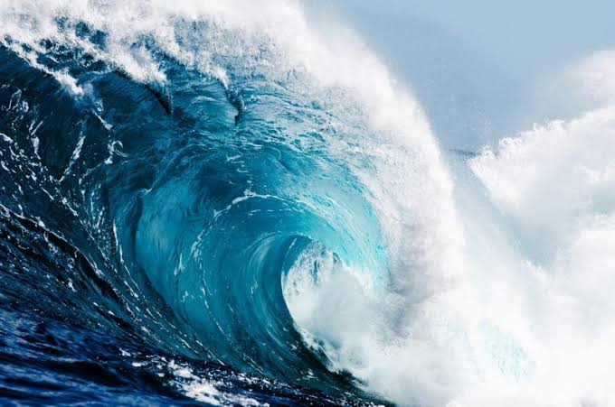
Deniz canlıları, güneş ışığının süzüldüğü aydınlık sığ sulardan (epipelajik katman), hiçbir ışığın ulaşmadığı ve buz gibi soğuk olan simsiyah okyanus çukurlarına kadar farklı katmanlarda yaşarlar. Derinlere indikçe su basıncı devasa boyutlara ulaşır; bu yüzden orada yaşayan canlılar kemiksiz, yumuşak dokulu ve özel biyolojik sistemlere sahiptir. Besin zincirinin en altındaki minik organizmalardan en büyük balinalara kadar her canlı, bu ekosistemde birbirine sıkı sıkıya bağlıdır.
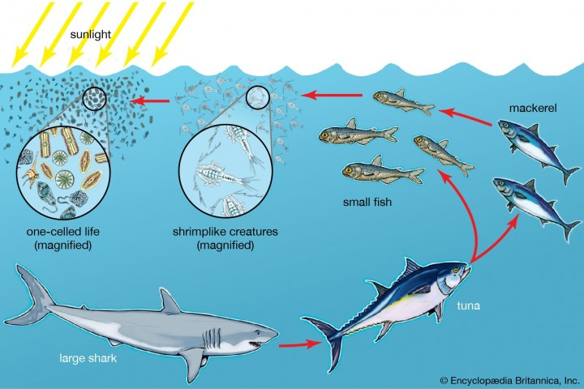
"Denizlerin yağmur ormanları" olarak adlandırılan mercan resifleri, okyanus tabanını süsleyen ve uzaydan bile görülebilen devasa canlı yapılardır. Aslında mercanlar, üst üste binmiş milyonlarca minik poliplerden oluşan hayvan kolonileridir. Deniz türlerinin yüzde 25'inden fazlasına yuva ve üreme alanı sağlarlar. Ancak artan su sıcaklıkları ve iklim krizi yüzünden mercanlar "beyazlaşarak" ne yazık ki büyük bir yok olma tehlikesiyle karşı karşıyadır.
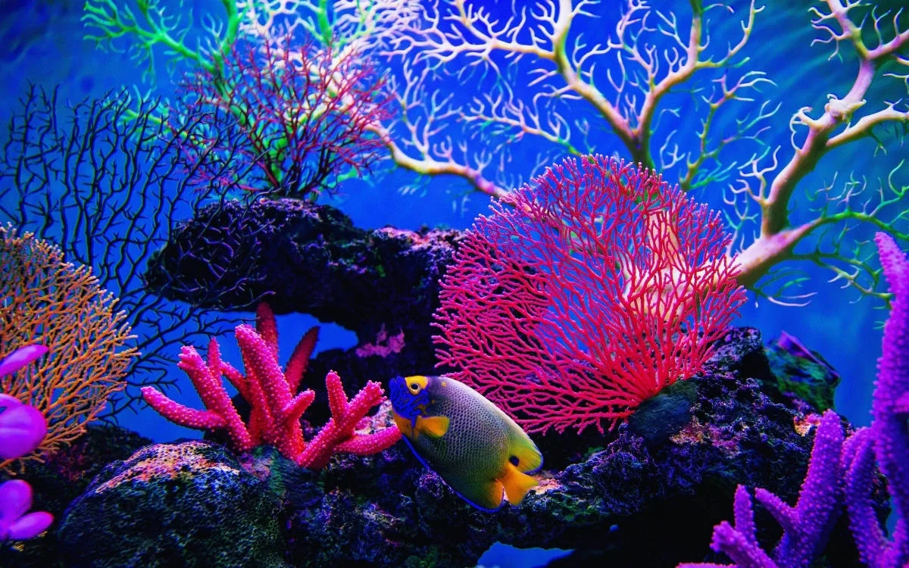
Derin denizlerin en hayaletimsi ve gizemli sakini olan Cam ahtapot, adeta yokmuş gibi görünür. Vücudu neredeyse tamamen şeffaf ve jelatinsi bir yapıdadır; dışarıdan bakıldığında yalnızca uzun gözleri, optik sinirleri ve sindirim sistemi net bir şekilde seçilebilir. Işığın asla ulaşmadığı okyanus katmanlarında (genellikle 1.000 metre derinde), avcılara görünmemek için bu kusursuz şeffaflık evrimini geliştirmiştir.
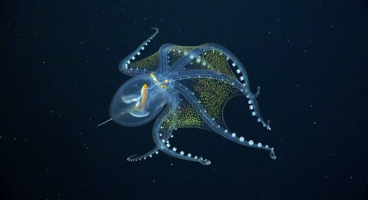
Avustralya'nın serin sularında yaşayan bu büyüleyici canlı, deniz atlarının ve deniz iğnelerinin çok yakın akrabasıdır. Vücudunu baştan sona kaplayan yaprak benzeri uzun çıkıntıları sayesinde, akıntıda salınan canlı bir yosun parçasını birebir taklit eder. Aslında bu yapraklar yüzmek için değil, sadece mükemmel bir kamuflaj sağlamak içindir. Çok yavaş hareket ederler ve nesilleri hassas koruma altındadır.
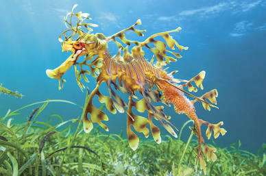
Sadece 3-4 santim boyunda olmasına rağmen okyanusun en çarpıcı canlılarından biri olan Mavi Melek, aslında minik bir deniz salyangozudur. Parlak elektrik mavisi ve gümüş rengi deseniyle su yüzeyinde sırtüstü yüzer. En ilginç özelliği ise kendisinden çok daha büyük ve zehirli deniz analarını (örneğin Portekiz Savaş Gemisi) avlaması ve onların zehirli hücrelerini kendi dokularında biriktirerek kendi savunma silahı olarak kullanmasıdır.
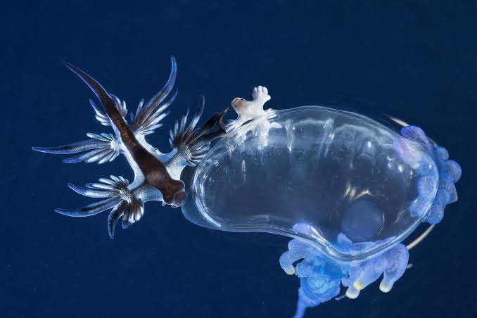
Adını Disney'in ünlü uçan fili Dumbo'dan alan bu sevimli ahtapot, okyanusun en dip ve karanlık tabakalarında (bazen 4.000 metre derinde) yaşar. Kafasının iki yanında kulak benzeri yuvarlak yüzgeçleri bulunur; bu yüzgeçleri hafifçe çırparak karanlık suların içinde sanki havada uçuyormuş gibi zarif bir şekilde hareket eder. Derin denizlerin en dost canlısı ve en az bilinen nadir yaratıklarından biridir.
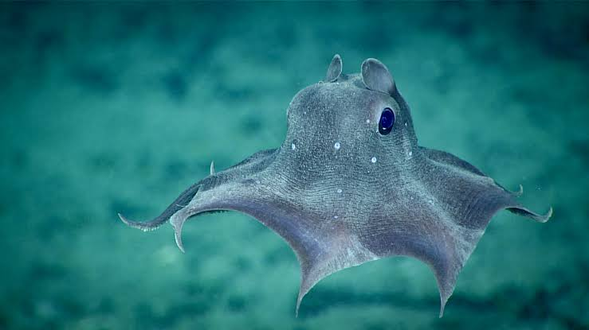
Dünyada milyonlarca yıldır varlığını sürdüren bu zarif ve şeffaf canlı, su içinde hareket ederken vücudundaki minik tarak benzeri kirpikleri (silia) kullanır. Bu kirpikler ışığı kırarak vücut üzerinde gökkuşağı gibi yanar-döner, hareketli renk dalgaları oluşturur (biyolüminesans). Gece karanlığında parlayan bu canlı, su altında minik bir kristal sarayı veya hareketli bir gökkuşağını andırır.
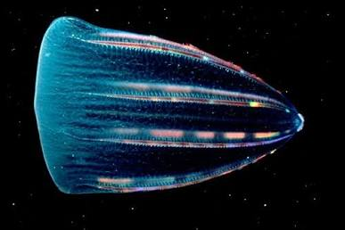
Derin denizlerin en korkunç ama en akıllı avcılarından biridir. Dişi fener balığının başının üzerinde, karanlık okyanus sularında fosforlu bir ışık saçan doğal bir "olta" (illicium) uzantısı bulunur. Güneş ışığının olmadığı okyanus tabanında, bu ışığa aldanarak yaklaşan küçük balıklar, fener balığının devasa ağzı ve iğne gibi geriye dönük dişleriyle aniden av olurlar.
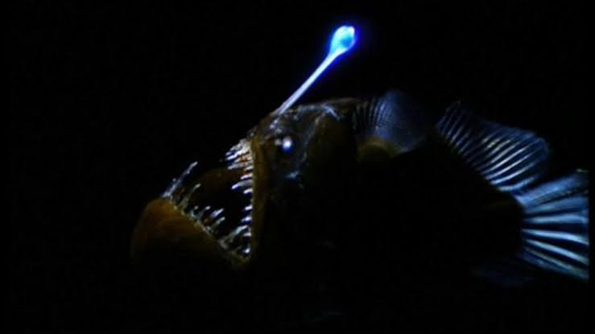
Arktik kutup sularının buzlu ve labirent gibi derinliklerinde yaşayan Narval, erkek bireylerin sol üst çenesinden dışarı doğru spiral şeklinde uzayan ve 3 metreye varabilen uzun dişiyle tanınır. Bu sivriltilmiş ve bükümlü diş, masallardaki tek boynuzlu atların (unicorn) boynuzuna benzetildiği için halk arasında "denizlerin unicornu" olarak anılır. Bilim insanları bu dişin yön bulmada veya sosyal statü göstergesinde kullanıldığını düşünmektedir.
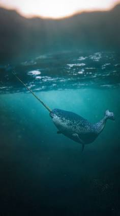
Yeryüzünde dinozorlardan bile çok daha önce, yaklaşık 400 milyon yıldır var olan köpekbalıkları, deniz ekosisteminin en kusursuz denge unsurlarıdır. Popüler kültürün aksine insanları av olarak görmezler. Aksine, okyanuslardaki hasta, zayıf ve yaşlı balıkları avlayarak denizlerin genetik sağlığını ve temizliğini korurlar. Büyük Beyaz, Kaplan Köpekbalığı ve Çekiçbaş en bilinen ve heybetli türleridir.
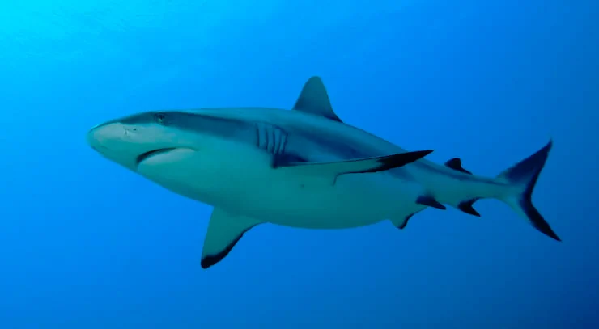
Suların bu memeli devleri, yüksek beyin kapasiteleri, karmaşık tıklama ve ıslık seslerinden oluşan iletişim dilleri ve güçlü aile bağlarıyla büyüleyicidir. Yunuslar son derece oyuncu ve akrobatik yapılarıyla bilinirken, mavi balinalar dünya tarihine gelmiş geçmiş en büyük hayvan olma unvanını taşır. Kalbinin büyüklüğü küçük bir araba kadar olan bu devasa canlılar, okyanuslar boyunca binlerce kilometre göç ederler.
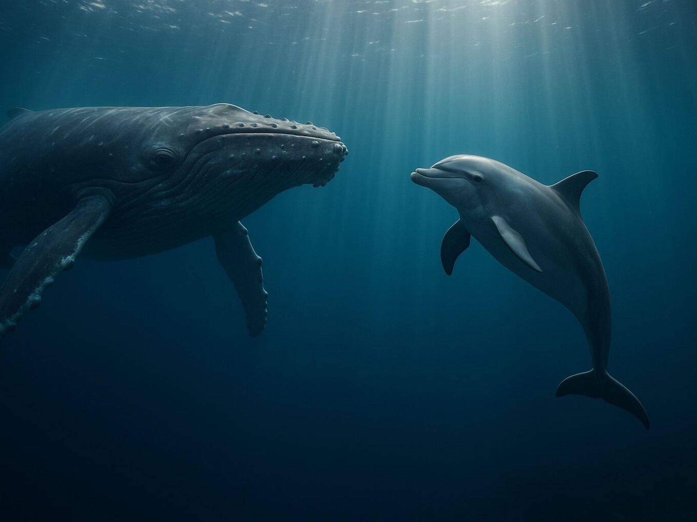
Kafadan bacaklılar ailesine ait olan bu zeki yaratıklar, doğanın en kusursuz kamufle ustalarıdır. Derilerindeki milyonlarca özel pigment hücresi (kromatofor) sayesinde saniyeler içinde renklerini, hatta derilerinin pürüzlülüğünü bulundukları kayaya veya mercana birebir uydurabilirler. Sadece renk değiştirmekle kalmaz; labirentleri çözer, alet kullanır ve inanılmaz kaçış taktikleri geliştirirler.
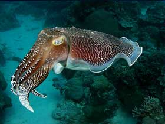
Yaklaşık 110 milyon yıldır dünyada var olan deniz kaplumbağaları (Caretta Caretta ve Yeşil Deniz Kaplumbağası gibi), inanılmaz bir navigasyon yeteneğine sahiptir. Onlarca yıl açık okyanuslarda binlerce kilometre yüzdükten sonra, üreme vakti geldiğinde hatasız bir şekilde tam olarak kendilerinin doğduğu aynı kumsallara geri dönerek yumurtlarlar. Hayatlarının neredeyse tamamını tuzlu sularda süzülerek geçirirler.
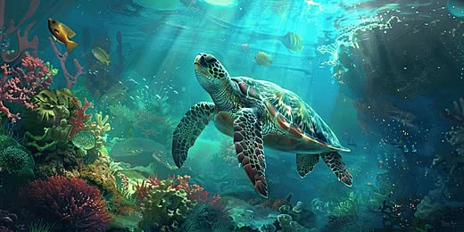
Denizler; rengarenk mercanları, cam gibi şeffaf derin deniz canlıları, devasa balinaları ve dünyamıza sağladığı nefes kaynağıyla paha biçilemez bir yaşam hazinesidir. Ancak küresel iklim krizi, okyanuslardaki aşırı plastik kirliliği ve bilinçsiz aşırı avlanma bu muazzam ekosistemi her geçen gün tehdit etmektedir. Okyanusları korumak, sadece deniz canlılarının değil, doğrudan dünyamızın ve geleceğimizin sağlığını korumak demektir.
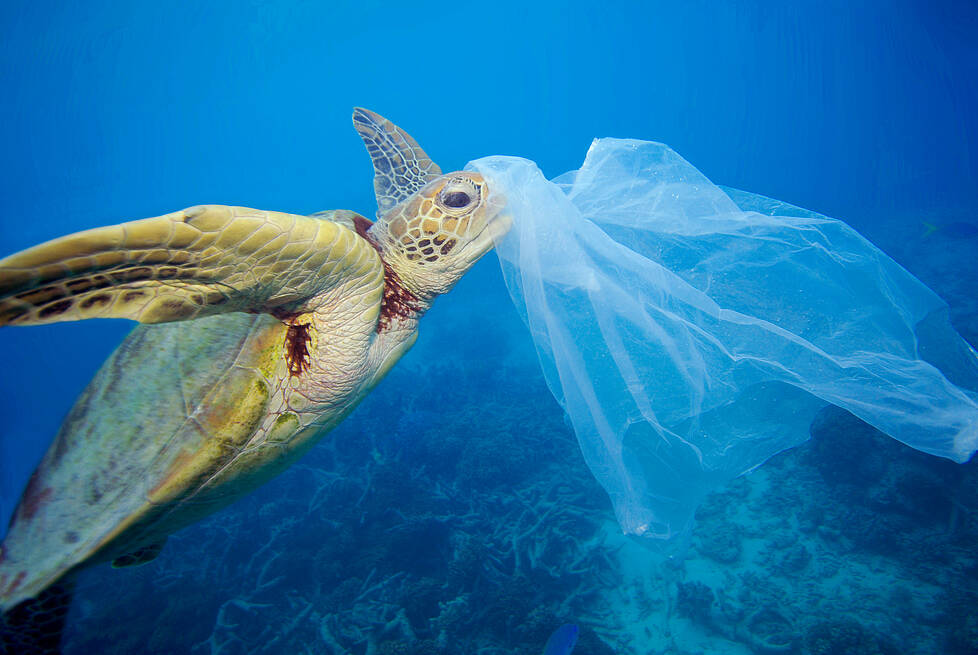